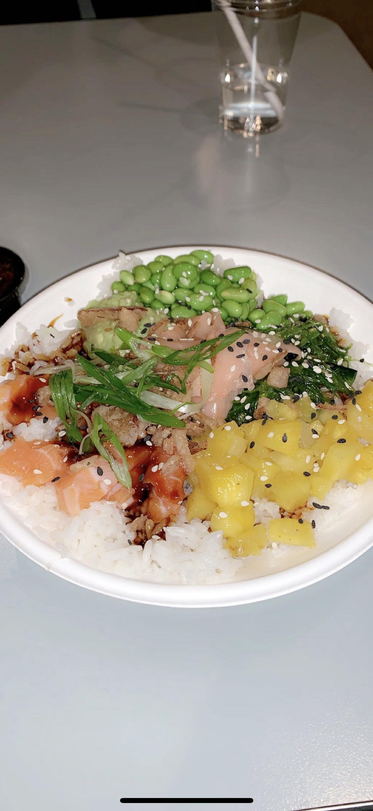
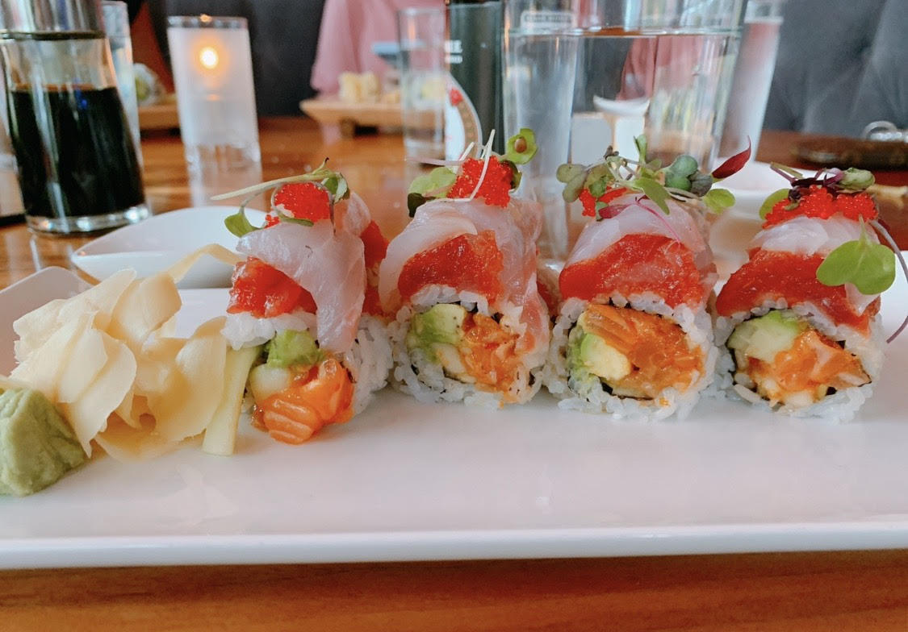

Ariel's Homepage
|
Breakfast
|
Lunch
|
Dinner
DINNER
Mooyah: They have gluten free buns for burgers.
Click here for the menu!
Red Sushi: The staff is very knowledgeable about allergies. They have gluten free soy sauce and even gluten free tempura in a dedicated gluten free fryer!
Click here for the menu!
Miko Poke: Everything on the menu is gluten free!
Click here for the menu!
Lucille: They have gluten free pizza that is cooked in a seperate oven.
Click here for the menu!

